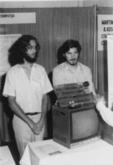

Apple I
Makineyi Aç, Sisteme Gir, Kullanmaya Başla...

Daniel Kottke’yle Jobs, Apple I’le birlikte
Atlantic City bilgisayar fuarında, 1976
Sevecen, Zarif Makineler
1960’ların sonlarında San Francisco’da ve Silikon Vadisi’nde çeşitli kültürel akımlar iç içeydi. Ordu müteahhitleriyle başlayan teknoloji devrimi kısa sürede elektronik firmalarına, mikroçip üreticilerine, bilgisayar oyunu tasarımcılarına ve bilgisayar şirketlerine yayılmıştı. Bir hacker altkültürü vardı –donanım korsanları, telefon korsanları, siberpunklar, amatörler ve teknoloji düşkünleri cirit atıyordu– ve bu kültüre HP’nin kalıbına uymayan mühendislerle, parselasyon alanlarını sevmeyen çocukları da dahildi. Yarı akademik gruplar LSD’nin etkileri üstüne araştırmalar yapıyorlardı; katılımcılar arasında Palo Alto’daki Augmentation Research Center’da çalışan ve sonradan bilgisayar faresiyle grafik kullanıcı arayüzlerinin geliştirilmesine katkıda bulunan Doug Engelbart ile LSD’yi taçlandırmak için sonradan Grateful Dead adıyla tanınacak yerel bir grubun da katıldığı ışıklı müzik gösterileri düzenleyen Ken Kesey de vardı. Bay Area’nın beat kuşağından doğmuş hippi akımı ve Berkeley’deki İfade Özgürlüğü Hareketi’ni benimsemiş asi politik aktivistler vardı. Bütün bunların dışında bir de kişisel aydınlanma yolları sunan çeşitli bireysel bütünleşme hareketleri vardı – Zen ve Hindu, meditasyon ve yoga, ilk çığlık ve duyusal yoksunluk, Esalen ve EST tedavisi.
Çiçek gücüyle işlemci gücünün, aydınlanmayla teknolojinin kaynaşımının somut örneği Steve Jobs’tı; sabahları meditasyon yapıyor, Stanford’da fizik derslerine giriyor, geceleri Atari’de çalışıyor ve kendi şirketini kurmayı hayal ediyordu. “Burada bir şeyler oluyordu,” dedi o zamanı ve mekânı düşünürken. “En iyi müzik burada yapılıyordu –Grateful Dead, Jefferson Airplane, Joan Baez, Janis Joplin–, entegre devreler üretiliyor ve The Whole Earth Catalog (Bütün Dünya Kataloğu) gibi şeyler yayınlanıyordu.”
Teknolojistlerle hippiler başta pek anlaşamadılar. Karşıkültürdeki çoğu insan bilgisayarları ürkütücü ve Orwellvari buluyordu, Pentagon’un ve İktidar Yapısı’nın parçası olarak görüyordu. Tarihçi Lewis Mumford Makine Miti’nde bilgisayarların özgürlüğümüzü azalttığı ve “hayatı zenginleştiren değerleri” ortadan kaldırdığı uyarısında bulundu. Dönemin delikli kartlarındaki bir yazı –“katlamayın, bükmeyin ve parçalamayın”–, savaş karşıtı solun kullandığı alaycı tabirlerden biri oldu.
Ama 1970’lerin başlarında bir zihniyet değişikliği gerçekleşiyordu. “Bilgisayarcılık bürokratik kontrolün maşası olmak olarak görülüp aşağılanırken, bireysel ifadenin ve özgürleşmenin sembolü olarak benimsenir hale geldi,” diye yazdı John Markoff, karşıkültürün bilgisayar endüstrisiyle yakınlaşmasını irdelediği Fındık Faresi Ne Dedi? adlı kitabında. Richard Brautigan 1967 tarihli şiiri Her Şey Sevecen, Zarif Makinelerin Gözetiminde’de bu etosu dizelere döktü ve Timothy Leary’nin kişisel bilgisayarların yeni LSD’ye dönüştüğünü ilan etmesiyle ve meşhur mantrasını “Makineyi aç, sisteme gir, kullanmaya başla,” şeklinde değiştirmesiyle birlikte siberdelik kaynaşma tasdiklenmiş oldu. Sonradan Jobs’ın arkadaşı olan müzisyen Bono, Bay Area’daki rock-uyuşturucu-isyan karşıkültürünü benimseyen insanların sonrasında nasıl olup da kişisel bilgisayar endüstrisinin yaratılmasına katkıda bulunduklarını tartıştılar sık sık. “21. yüzyılı icat eden insanlar Steve gibi esrar içen, sandalet giyen, Batı Sahili hippileriydiler, çünkü dünyayı farklı görüyorlardı,” diyor Bono. “Doğu Sahili’nin, İngiltere’nin, Almanya’nın ve Japonya’nın hiyerarşik sistemleri bu farklı düşünce tarzını desteklemiyorlar. altmışlar henüz varolmayan bir dünyayı hayal etmeye çok uygun bir anarşik zihniyet üretti.”
Karşıkültürcüleri hackerlarla işbirliği yapmaya en çok teşvik eden kişi Stewart Brand’dı. Onlarca yıldır eğlenen ve fikirler üreten muzip bir vizyoner olan Brand, altmışların başlarında Palo Alto’da yapılan LSD çalışmalarına katılmıştı. Bir başka denek olan Ken Kesey’le birlikte, LSD’yi kutlayan Trips Festivali’ni düzenledi, Tom Wolfe’un The Electric Kool-Aid Acid Test kitabının açılış öyküsünün kahramanlarından biri oldu ve Doug Engelbart’la birlikte çalışarak, yeni teknolojilerin çığır açıcı bir sesli ve ışıklı sunumu olan The Mother of All Demos’u (Tüm Sunumların Atası) üretti. “Bizim kuşağımızın çoğu bilgisayarları aşağılıyordu, onları merkezi kontrolün simgesi olarak görüyorlardı,” dedi Brand sonradan. “Ama küçük bir grup –ki onlara sonradan hacker dendi– bilgisayarları benimsedi ve özgürleşme araçları olarak kullanmaya girişti. Bunun geleceğe götüren asıl yol olduğu ortaya çıktı.”
Brand Bütün Dünya Karavan Dükkânı’nı işletiyordu, ki bu dükkân başta içinde ilginç aletlerin ve eğitici materyallerin satıldığı bir karavandı; 1968’de Bütün Dünya Kataloğu’nu çıkarmaya karar verdi. Kataloğun ilk kapağında dünyanın uzaydan çekilmiş ünlü fotoğrafı ve altında “aletlere erişim” yazısı vardı. Temel felsefesi teknolojinin arkadaşımız olabileceğiydi. Brand’ın ilk edisyonun ilk sayfasına yazdığı gibi: “Mahrem ve bireysel bir güç sahası gelişiyor – bireyin kendini eğitme, kendi ilham kaynağını bulma, kendi çevresini biçimlendirme ve macerasını ilgilenen insanlarla paylaşma gücü. Bütün Dünya Kataloğu bu sürece katkıda bulunan aletleri bulup tanıtıyor.” Sonra Buckminster Fuller’in şöyle başlayan bir şiiri geliyordu: “Aksamadan çalışan cihazlarda ve mekanizmalarda Tanrı’yı görüyorum...”
Jobs derginin müptelası oldu. Özellikle de 1971’de, kendisi henüz lisedeyken yayınlanan son sayıdan etkilendi ve o sayıyı üniversiteye ve ardından Her Şey Birdir Çiftliği’ne götürdü. “Son sayılarının arka kapağında sabahın köründe çekilmiş bir taşra yolu fotoğrafı vardı; maceracı bir otostopçuysan kendini üstünde bulabileceğin türden bir yoldu. Altına şöyle yazılmıştı: ‘Aç kal. Budala kal.’” Brand Jobs’ı kataloğun desteklemeye çalıştığı kültürel karışımın en iyi örneklerinden biri olarak görüyor. “Steve karşıkültürle teknolojinin tam kesiştiği yerde,” diyor. “Aletlerin insanlara faydalı olduğunu biliyor.”
Brand’ın kataloğu, o zamanlar yeni filizlenen bilgisayar eğitimi sahasına yönelik bir kuruluş olan Portola Enstitüsü’nün yardımıyla yayınlanıyordu. Kuruluş aynı zamanda, “halka bilgisayar gücü” düsturuyla hareket eden bir gazete ve organizasyon olan Halkın Bilgisayar Şirketi’nin kurulmasına yardımcı oldu. Bazı Çarşamba geceleri grup yemekleri düzenleniyordu ve müdavimlerden ikisi –Gordon French’le Fred Moore–, kişisel elektronikle ilgili haberlerin paylaşılabileceği daha resmi bir kulüp kurmaya karar verdiler.
Popular Mechanics’in Ocak 1975 sayısı onları şevklendirdi; bu sayının kapağında ilk bilgisayar kiti olan Altair’in fotoğrafı vardı. Altair pahalı değildi –parçaları bir devre kartına lehimleyip, pek az şey yapabilen bir cihaza sahip olmanın bedeli sadece 495 dolardı–, ama hobicilerin ve hackerların gözünde yeni bir çağın başlangıcıydı. Bill Gates’le Paul Allen dergiyi okuyunca, BASIC’in Altair versiyonu üstünde çalışmaya başladılar. Altair Jobs’la Wozniak’ın da dikkatini çekti. Ve Altair’in bir tanıtım kopyası Halkın Bilgisayar Şirketi’ne gelince, French’le Moore’un kurmaya karar verdikleri kulübün ilk toplantısının ilgi odağı oldu.
Homebrew Bilgisayar Kulübü
Grup Homebrew[1] Bilgisayar Kulübü adını aldı ve Bütün Dünya’nın karşıkültürle teknolojiyi kaynaştırma tavrını tamamen benimsedi. Dr. Johnson’ın[2] zamanındaki Turk’s Head kahvehanesinin bilgisayar çağı versiyonuydu, fikirlerin paylaşılıp yayıldığı bir yerdi. Moore 5 Mart 1975’te French’in Menlo Park’taki garajında düzenlenen ilk toplantının el ilanlarını yazdı: “Kendi bilgisayarınızı mı yapıyorsunuz? Terminalinizi, televizyonunuzu, daktilonuzu?” diye soruluyordu ilanda. “Öyleyse sizin gibi insanların bir araya geleceği bu toplantıya katılabilirsiniz.”
Allen Baum el ilanını HP ilan panosuna astı ve Wozniak’ı toplantıya çağırdı; Wozniak teklifi kabul etti. “O gece hayatımın en önemli gecelerinden biriydi,” diye anımsıyordu Wozniak. French’in garajına otuz kişi kadar geldi ve ilgi alanlarını sırayla anlattılar. Çok gergin olduğunu sonradan itiraf eden Wozniak “bilgisayar oyunlarından, otellerdeki paralı filmlerden, bilimsel hesap makinesi ve televizyon terminali tasarımlarından hoşlandığını,” söyledi, Moore’un tuttuğu notlara bakılırsa. Yeni Altair sergilendi, ama daha da önemlisi Wozniak’ın bir mikroişlemcinin teknik özellikler belgesini görmesiydi.
Mikroişlemciler –üzerinde eksiksiz bir CPU bulunan çipler– üstüne düşünürken aklına bir fikir geldi. Uzak bir minibilgisayara bağlanacak klavyeli ve monitörlü bir terminal üstünde çalışmaktaydı. Bir mikroişlemci kullanarak minibilgisayarın kapasitesinin bir kısmını terminale aktarıp onu masa üstüne konulabilecek küçük bir bilgisayara dönüştürebilirdi. Tutacak bir fikirdi bu: Tek bir entegre kişisel pakete dahil olan bir klavye, monitör ve bilgisayar. “Bu kişisel bilgisayar fikri birden aklıma geliverdi,” diyor. “O gece sonradan Apple I adıyla bilinecek bilgisayarın tasarımını çizdim.”
Başta Altair’deki mikroişlemcinin, Intel 8080’in aynısını kullanmayı düşündü. Ama bunların herbiri “evinin kirasından fazla” tuttuğundan bir alternatif aradı. HP’de çalışan bir arkadaşının tanesini 40 dolara alabildiği Motorola 6800’de karar kıldı. Sonra MOS Technologies’in elektronik açıdan aynı, ama fiyatı sadece 20 dolar olan bir çipini keşfetti. Böylece makinesi ucuza mal olacaktı, ama bunun uzun vadede bedeli olacaktı. Intel’in çiplerinin endüstri standardı haline gelmesi, bilgisayarları bu çiplerle uyumsuz olan Apple’a sorun çıkaracaktı.
Wozniak her gün işten sonra eve gidip televizyon karşısında akşam yemeği yiyor ve ardından HP’ye geri dönüp bilgisayarının üstünde çalışıyordu. Küçük odasında parçaları masaya seriyor, neyi nereye yerleştireceğine karar veriyor ve onları anakartına lehimliyordu. Sonra mikroişlemcinin ekranda görüntüler sergilemesini sağlayacak yazılımı yazmaya başladı. Başkasına yazdıracak parası olmadığından kodu bizzat kendisi yazıyordu. İki ay sonra bilgisayarı denenmeye hazır hale geldi. “Klavyede birkaç tuşa bastım ve şoke oldum! Harfler ekranda belirmişti.” O gün, 29 Haziran 1975 Pazar günü, kişisel bilgisayarlar için bir dönüm noktasıydı. “Tarihte ilk kez,” dedi Wozniak sonradan, “bir insan bir klavyenin tuşlarına basıp da harflerin karşısındaki bilgisayar ekranında belirdiğini görüyordu.”
Jobs etkilenmişti. Wozniak’ı soru yağmuruna tuttu. Bu bilgisayar bir ağa bağlanabilir miydi? Bellek deposu niyetine bir disk eklemek mümkün müydü? Woz’un parçalar bulmasına da yardım etmeye başladı. DRAM (dinamik rastgele erişimli bellek) çipleri özellikle önemliydi. Jobs birkaç telefon konuşması yapınca Intel’den birkaç tanesini bedavaya almayı başardı. “Steve öyle bir insandır,” diyor Wozniak. “Yani bir satış temsilcisiyle nasıl konuşulacağını biliyordu. Ben hayatta yapamazdım. Fazla çekingenim.”
Jobs Wozniak’la birlikte Homebrew toplantılarına katılmaya başladı, TV monitörünü taşıdı ve kurulum yapılmasına yardım etti. Artık toplantılara yüzden fazla kişi katılıyordu ve Stanford Lineer Hızlandırıcı Merkezi’nin, Mavi Kutu’yu yapmalarını sağlayan telefon sistemi rehberlerini buldukları yerin oditoryumunda toplanmaya başlamışlardı. Toplantılara elinde bir işaret değneğiyle ve rahat bir edayla katılan Lee Felsenstein, bilgisayar ve karşıkültür dünyalarının kaynaşmasının bir başka örneğiydi. Mühendislik okulundan terkti, İfade Özgürlüğü Hareketi’ne katılmıştı ve savaş karşıtı bir aktivistti. Bir alternatif gazete olan Berkeley Barb’ta yazdıktan sonra bilgisayar mühendisliğine geri dönmüştü.
Felsenstein her toplantının başında kısa bir soru cevap seansı düzenliyordu, sonra önceden seçilmiş bir amatör sunumunu yapıyordu ve en sondaki “rastgele erişim” seansında herkes ortalıkta dolanıp birbirini sıkıştırıyor ve anlaşmalar yapıyordu. Woz fazla çekingen olduğundan toplantılarda pek konuşmuyordu genellikle, ama insanlar toplantı sonrasında makinesinin etrafına üşüşünce onlara katettiği mesafeyi gururla gösteriyordu. Moore Homebrew’de ticaretten çok takas ve paylaşma etiğini benimsetmeye çalışmıştı. “Kulübün amacı,” diyor Woz, “başkalarına yardım etmekti.” Bilginin serbest olması ve hiçbir otoriteye güvenilmemesi, hacker etiğinin ifadesiydi. “Apple’ı tasarladım çünkü onu başka insanlara bedavaya vermek istiyordum,” diyor Wozniak.
Bill Gates’in benimsediği yaklaşım bu değildi. O ve Paul Allen Altair için yazdıkları BASIC yorumlayıcısını tamamlamışlardı ve Gates Homebrew üyelerinin bunu kendisine para vermeden kopyalayıp paylaşmalarına afallamıştı. Bu yüzden kulübe sonradan ünlü olacak bir mektup yazdı: “Siz amatörlerin çoğu, kullandığınız yazılımların çoğunu çaldığınızın farkındasınızdır. Bu adil mi?... Bir kere iyi programlar yazılmasını engelliyorsunuz. Kimin profesyonel işleri bedavaya yapacak durumu var ki?... Ödeme yapmak isteyenler bana yazsınlar lütfen.”
Steve Jobs da Wozniak’ın yaratılarının –ister Mavi Kutu olsun, ister bilgisayar– bedava olmasını istemiyordu. Dolayısıyla Wozniak’ı şematiklerinin kopyalarını bedavaya vermemeye ikna etti. Çoğu insanın öyle bir şeyi bizzat üretmeye zaten zamanının olmadığını savundu. “Neden baskılı devre kartları (circuit board) yapıp onlara satmıyoruz?” Simbiyozlarının bir örneğiydi bu. “Ne zaman iyi bir şey tasarlasam, Steve bize para kazandırmanın yolunu buluyordu,” diyor Wozniak. Wozniak o fikri tek başına hayatta akıl edemeyeceğini itiraf ediyor. “Bilgisayar satmak aklımın ucundan bile geçmemişti,” diye anımsıyor Wozniak. “Birkaç tane yapıp satalım, diyen Steve’di.”
Jobs Atari’de çalışan bir tanıdığına devre kartları çizdirip elli tane kadar üretme planı yaptı. Bunun maliyeti 1.000 dolar civarı artı tasarımcı ücreti olacaktı. Tanesini 40 dolara satarlarsa 700 dolar civarı net kâr elde edebilirlerdi. Wozniak hepsini satabileceklerinden şüpheliydi. “Paramızı nasıl geri alabileceğimizi anlamıyordum,” diye anımsıyor. Çekleri karşılıksız çıktığı için ev sahibiyle sorun yaşamıştı ve artık her ay kirayı nakit ödemek zorunda kalıyordu.
Jobs Wozniak’ı nasıl ikna edeceğini biliyordu. Para kazanmalarının kesin olduğunu söylemedi, eğlenceli bir macera yaşayacaklarını söyledi. “Paramızı kaybetsek bile şirketimiz olacak,” dedi Jobs, onun Volkswagen minibüsüyle gezerlerken. “Hayatımızda ilk kez şirketimiz olacak.” Wozniak bunu zengin olmaktan bile daha cazip buldu. Wozniak şöyle hatırlıyor: “Bizi öyle hayal edince heyecanlandım. İki en yakın dost bir şirket kuracaklardı. Vay. Bunu yapacağımı hemen anladım. Yapmamam mümkün müydü?”
Gereken parayı bulabilmeleri için Wozniak HP 65 hesap makinesini 500 dolara sattı, gerçi paranın ancak yarısını alabildi. Jobs ise Volkswagen minibüsünü 1.500 dolara sattı. Babası minibüsü almasını istememişti zaten ve Jobs onun haklı olduğunu kabul etmek zorunda kalmıştı. Berbat bir taşıt olduğunu görmüştü. Öyle ki sattığı kişi iki hafta sonra gelip motorun bozulduğunu söyledi. Jobs tamir masrafının yarısını karşılamayı kabul etti. Bu ufak tefek pürüzlere karşın, kendi küçük birikimlerini de katınca 1.300 dolar nakiti denkleştirdiler; ayrıca bir ürün tasarımları ve planları da vardı. Kendi bilgisayar şirketlerini kuracaklardı.
Apple Doğuyor
Kuracakları şirkete isim bulmaları gerekiyordu. Jobs Her Şey Birdir Çiftliği’ne tekrar gitmiş ve orada Gravenstein elması ağaçlarını budamıştı; sonra Wozniak onu havaalanından almıştı. Los Altos’a giderken seçeneklerini gözden geçirdiler. Matrix gibi tipik teknolojik sözcükleri ve Executek gibi bazı uydurma sözcükleri, ayrıca Kişisel Bilgisayarlar A.Ş. gibi basbayağı sıkıcı isimleri düşündüler. Ertesi gün karar vermek için son günleriydi, çünkü Jobs gerekli belgeleri hazırlamaya başlamak istiyordu. Nihayet Jobs, Apple Computer adını önerdi. “Meyve diyetlerimden birindeydim,” diye açıkladı. “Elma çiftliğinden yeni dönmüştüm. Rahatsız edici olmayan, eğlenceli, canlı bir isim gibi geldi. Apple (elma) sözcüğü, computer (bilgisayar) sözcüğünü yumuşatıyordu. Hem böylece telefon rehberinde Atari’den önde olacaktık.” Wozniak’a yarına kadar akıllarına daha iyi bir isim gelmezse Apple’ı kullanacağını söyledi. Ve onu kullandılar.
Apple. Zekice bir seçimdi. Bu sözcük akla dostaneliği ve sadeliği getiriyordu hemen. Hem biraz farklı, hem de bir dilim turta kadar normal olmayı başarıyordu. Biraz karşıkültür havası, doğaya geri dönüş çevreciliği havası da taşıyordu, ama hiçbir şey daha Amerikan olamazdı. Ve o iki sözcük –Apple Computer– yan yana gelince ilginç bir tezat oluşturuyorlardı. Kısa süre sonra yeni şirketin ilk başkanı olan Mike Markkula “Biraz tuhaf duruyor,” dedi. “Dolayısıyla insanı üstünde düşünmeye zorluyor. Elma ve bilgisayar, birbirine hiç uygun değil! Böylece marka bilinirliğimizin artmasına katkısı oldu.”
Wozniak şirkette tam gün çalışmaya henüz hazır değildi. Temelde bir HP çalışanıydı, en azından öyle düşünüyordu ve oradaki işini kaybetmek istemiyordu. Jobs, Wozniak’ı ikna etmesine yardım edecek ve anlaşmazlıklarda çoğunluğu sağlayabilecek bir arkadaşa ihtiyaç duyduğunu fark etti. Bu yüzden arkadaşı Ron Wayne’i, Atari’de çalışan ve bir zamanlar bir slot makinesi şirketi kurmuş olan orta yaşlı mühendisi aralarına kattı.
Wayne, Wozniak’ı HP’den ayrılmaya ikna etmenin kolay olmayacağını, aslında şimdilik gerekli de olmadığını biliyordu. Asıl mesele onu bilgisayar tasarımlarının Apple ortaklığına ait olmasına ikna etmekti. “Woz geliştirdiği devreleri çocukları gibi görüyordu ve onları başka uygulamalarda da kullanabilmek veya HP’nin kullanmasına izin verebilmek istiyordu,” diyor Wayne. “Jobs’la bense bu devrelerin Apple’ın temeli olacaklarının farkındaydık. Dairemdeki masada oturup iki saat toplantı yaptık ve sonunda Woz’u ikna edebildim.” Büyük bir mühendisin ancak büyük bir pazarlamacıyla birlikte çalışırsa gelecekte hatırlanabileceğini ve bunun gerçekleşebilmesi için Woz’un tasarımlarını ortaklığa devretmesinin şart olduğunu savunmuştu. Jobs öyle etkilendi ve minnet duydu ki Wayne’e yeni ortaklığın %10 hissesini teklif etti; onu Apple’ın Pete Best versiyonuna dönüştürdü ve daha da önemlisi, Jobs’la Wozniak’ın anlaşamadığı durumlarda karar verici olmasını sağladı.
“Birbirlerinden çok farklıydılar, ama güçlü bir ekiptiler,” diyor Wayne. Jobs bazen içine şeytan kaçmış gibi davranabiliyordu, Woz ise meleklerin parmağında oynattığı naif bir insan gibiydi. Jobs girişkenliği sayesinde işleri halledebiliyordu, bazen insanları manipüle ederek. Karizmatik, hatta hipnotize edici olabiliyordu; ama soğuk ve zalim de olabiliyordu. Wozniak ise çekingen ve asosyaldi; bu ona çocuksu bir sevimlilik katıyordu. “Woz bazı alanlarda çok zeki iken tanımadığı insanların karşısında apışıp kalıyordu,” dedi Jobs. “İyi bir çifttik.” Jobs’ın Wozniak’ın mühendislik sihirbazlığına duyduğu, Wozniak’ınsa Jobs’ın çalışma azmine duyduğu hayranlığın da katkısı oldu. “Ben insanlarla uğraşmak, onlarla dalaşmak istemiyordum, ama Steve tanımadığı insanları arayıp bir şeyler yaptırabiliyordu,” diyor Wozniak. “Zeki olmadığını düşündüğü insanlara kaba davranabiliyordu, ama bana asla kaba davranmadı; sonraki yıllarda, bazı sorularını istediği kadar iyi yanıtlayamadığım zamanlarda bile.”
Wozniak, yeni bilgisayar tasarımının Apple ortaklığının malı olmasını kabul etmesinden sonra bile tasarımını önce HP’ye sunması gerektiğini, çünkü orada çalıştığını düşündü. “HP’de çalışırken tasarladığım bir şeyi o şirkete söylememin görevim olduğuna inanıyordum,” diyor Wozniak. “Doğru ve etik olan buydu.” Bu yüzden 1976 baharında tasarımını patronuna ve üst düzey yöneticilere gösterdi. Toplantıya katılan genel müdür etkilenmişti –ve kararsız kalmış gibiydi– ama sonunda HP’nin böyle bir ürünü geliştiremeyeceğini söylemişti. Bir amatörün ürünüydü, en azından şimdilik ve şirketin yüksek kalite pazar segmentine uymuyordu. “Hayal kırıklığına uğradım,” diye anımsıyor Wozniak, “ama artık Apple ortaklığına katılmakta serbesttim.”
1 Nisan 1976’da Jobs’la Wozniak, Wayne’in Mountain View’daki dairesine ortaklık sözleşmesini imzalamaya gittiler. “Resmi yazılar” konusunda biraz tecrübeli olduğunu söyleyen Wayne üç sayfalık belgeyi bizzat hazırlamıştı. Ancak “resmi yazılar” konusunda çok iyi değildi. Paragraf başları tumturaklıydı: “Şu belirtilmelidir ki... Ayrıca şu belirtilmelidir ki... Dola yısıyla [yazım hatası], karşılıklı çıkarlar göz önünde bulundurularak...” Ancak hisse ve kâr paylaşımları netti –%45, %45, %10– ve yüz doları aşan harcamalarda en az iki ortağın onayı şart koşuluyordu. Sorumluluklar da belirtilmişti. “Wozniak Elektrik Mühendisliği bölümünün genel ve baş sorumlusu olacaktır; Jobs Elektrik Mühendisliği ve Pazarlama bölümlerinin genel sorumlusu olacaktır; Wayne Mekanik Mühendislik ve Dokümantasyon bölümlerinin baş sorumlusu olacaktır.” Jobs küçük harflerle, Wozniak özenli bir el yazısıyla, Wayne ise kargacık burgacık ve okunaksız harflerle imza attı.
Sonra Wayne ürktü. Jobs giderek daha fazla kredi alıp harcamayı planladıkça Wayne kendi şirketinin başarısızlığını hatırladı. Aynı şeyi tekrar yaşamak istemiyordu. Jobs’la Wozniak’ın kişisel mal varlıkları yoktu, ama Wayne (küresel mali kıyametten kaygılandığından) yastık altında altın saklıyordu. Apple’ı bir şirketten çok basit bir ortaklık olarak kurduklarından, ortaklar borçlardan şahsen sorumlu olacaklardı ve Wayne alacaklıların peşine düşmesinden korkuyordu. Dolayısıyla sadece on bir gün sonra Santa Clara belediye ofisine geri döndü ve bir “cayma beyanı” sunarak ortaklık anlaşmasından çekildiğini bildirdi. “Tüm taraflar arasındaki anlaşmaların gözden geçirilmesi sonucunda,” diye başlıyordu beyan, “Wayne artık ‘Ortak’ konumunda olmayacaktır.” Beyanda Wayne’in %10’luk şirket hisseleri karşılığında 800 dolar aldığı belirtiliyordu ve kısa süre sonra 1.500 dolar daha aldı.
Şirkette kalıp da %10’luk hisselerini elinde tutsaydı, 2010 sonunda bu hisselerin değeri aşağı yukarı 2,6 milyar dolar olacaktı. Oysa 2010 sonunda Pahrump, Nevada’daki küçük bir evde tek başına yaşıyordu, orada slot makineleriyle oynuyor ve sosyal güvenlik çekiyle geçiniyordu. “O sırada benim için en iyi kararı verdim,” diyor. “İkisi de fazla hızlı gidiyorlardı ve ben öyle bir yolculuğa hazır olmadığımı hissediyordum.”
Jobs’la Wozniak, Apple’ı resmen kurmalarından kısa süre sonra Homebrew Bilgisayar Kulübü’nde birlikte sahneye çıkıp bir sunum yaptılar. Wozniak yeni ürettikleri devre kartlarından birini gösterdi ve mikroişlemciyi, 8 KB’lik belleği ve yazdığı BASIC versiyonunu anlattı. Ayrıca asıl önem verdiği şeyi vurguladı: “Bir sürü ışıklı ve düğmeli, kafa karıştırıcı, salak bir ön panel yerine insanların kolayca kullanabileceği bir klavye.” Sonra sıra Jobs’a geldi. Jobs, Altair’in tersine Apple’ın bütün gerekli bileşenleri içerdiğini söyledi. Sonra onlara bir soru sordu: İnsanlar böyle muhteşem bir makine için ne kadar para ödemeye razı olurlardı? Apple’ın şaşırtıcı değerini anlamalarını sağlamaya çalışıyordu. Sonraki onyıllarda bu retorik soruyu ürün sunumlarında kullanacaktı.
Seyirciler pek etkilenmemişlerdi. Apple’ın işlemcisi ucuzdu, Intel 8080 değildi. Ama önemli bir kişi, daha fazlasını duymak için kaldı. Adı Paul Terrell’dı ve 1975’te Menlo Park’taki Camino Real’de Byte Shop adlı bir bilgisayar dükkânı vardı. Şimdi, bir yıl sonraysa üç dükkânı vardı ve bir ulusal mağaza zinciri kurmayı hayal ediyordu. Jobs ona makineyi seve seve gösterdi. “Şuna bir bak,” dedi. “Gördüklerini seveceksin.” Terrell, Jobs’la Woz’a kartvizitini verecek kadar etkilendi. “Bağlantıyı koparmayın,” dedi.
“Bağlantıyı koparmıyorum,” dedi Jobs ertesi gün, Byte Shop’a yalınayak girerken. Satışı yaptı. Terrell 50 bilgisayar sipariş vermeyi kabul etti. Ama bir şartı vardı. Terrell sadece 50 dolarlık devre kartları istemiyordu, çünkü o zaman müşteriler bütün çipleri satın alıp parçaları birleştirmek zorunda kalacaklardı. Bu birkaç fanatik amatörün ilgisini çekebilirdi, ama bütün müşterilerin değil. Bunun yerine devrelerin tamamen kurulmuş olmasını istiyordu. Bunun için parça başına 500 dolar ödemeye hazırdı.
Jobs hemen HP’deki Wozniak’ı aradı. “Oturuyor musun?” diye sordu. Wozniak ayakta olduğunu söyledi. Jobs yine de ona haberi verdi. “Şoke oldum, resmen şoke oldum,” diye anımsıyor Wozniak. “O anı asla unutmayacağım.”
Siparişi teslim etmek için toplam 15.000 dolarlık parçalara ihtiyaçları vardı. Homestead Lisesi’nin üçüncü şakacısı Allen Baum’la babası onlara 5.000 dolar borç vermeyi kabul ettiler. Jobs Los Altos’taki bir bankadan kredi çekmeye çalıştı, ama müdür ona bir baktıktan sonra şaşırtıcı olmayan bir şekilde reddetti. Jobs Halted toptancısına gitti ve parçalar karşılığında Apple’dan hisse vermeyi önerdi, ama onların “kılıksız görünüşlü iki delikanlı” olduklarına hükmeden toptancı teklifi reddetti. Atari’deki Alcorn ona çipleri ancak nakit karşılığında satacaktı. Jobs sonunda Cramer Electronics’in müdürünü, Paul Terrell’ı arayıp 25.000 dolarlık siparişi teyit ettirmeye ikna etti. Terrell acil çağrısı olduğunu bir hoparlörden duyduğunda bir konferanstaydı (Jobs ısrarcı davranmıştı). Cramer’ın müdürü ona iki tane kılıksız delikanlının gelip Byte Shop adına sipariş verdiklerini söyledi. Doğru mu söylüyorlardı? Terrell doğru söylediklerini onaylayınca müdür Jobs’a parçaları ödemesi 30 gün sonra yapılmak üzere vermeyi kabul etti.
Garaj Grubu
Jobs’ın Los Altos’taki evi elli Apple I devre kartının imalathanesi oldu; bunların 30 gün içinde Byte Shop’a teslim edilip parasının tahsil edilmesi gerekiyordu, çünkü daha sonra kullandıkları parçaların ödemesi yapılacaktı. Bulabildikleri herkesi yardıma çağırdılar – Jobs’la Wozniak, artı Daniel Kottke, eski kız arkadaşı Elizabeth Holmes (katıldığı tarikattan ayrılmıştı) ve Jobs’ın hamile kız kardeşi Patty birlikte çalıştılar. Patty’nin boşalttığı yatak odasında, ayrıca mutfak masasında ve garajda çalıştılar. Mücevherat dersi almış olan Holmes’a çipleri lehimleme görevi verildi. “Çoğunu iyi lehimledim, ama birkaçına lehim bulaştırdım,” diyor. Jobs bundan hoşlanmadı. “Ziyan edecek çipimiz yok,” diye azarladı ve haklıydı. Holmes’u mutfak masasına, hesap kitap işleriyle uğraşmaya gönderip lehimleme işini bizzat yaptı. Devre kartlarını tamamlayınca Wozniak’a veriyorlardı. “Tamamlanmış devreleri televizyon ve klavyeye bağlayıp, çalışıp çalışmadıklarını kontrol ediyordum,” diyor. “Çalışanları bir kutuya koyuyordum. Çalışmayanlarınsa hangi pinlerinin sokete oturmadığını buluyordum.”
Paul Jobs ise yan mesleği olan eski araba tamirciliğine ara verdi, Apple kadrosu bütün garajı kullanabilsin diye. Garaja eski ve uzun bir çalışma tezgâhı getirdi, yeni yaptığı alçı panele bilgisayarın şematiğini astı ve depo niyetine kullanılacak dolaplar getirip çekmecelerine bileşenlerin isimlerini etiketledi. Ayrıca ısı lambalı bir ısıtma kutusu yaptı, bilgisayar kartları geceleri yüksek ısıda bırakılıp test edilebilsin diye. Sinirler gerildiğinde, ki Steve Jobs’ın bulunduğu bir ortamda normaldi bu, babası ortalığı az çok sakinleştiriyordu. “Hayrola?” diyordu. “Kıçına kuştüyü mü kaçtı?” Bunların karşılığında, arada sırada bir futbol maçının sonunu izlemek için televizyonu geri istiyordu, çünkü evdeki tek televizyondu o. Jobs’la Kottke bu molaların bazılarında dışarı çıkıp bahçede gitar çalıyorlardı.
Annesi evinin büyük bölümünün oğlunun makine parçaları ve misafirleri tarafından işgal edilmesine aldırmıyordu, ama onun giderek tuhaflaşan diyetlerinden rahatsız oluyordu. “Onun yeni beslenme takıntılarını duydukça gözlerini deviriyordu,” diye anımsıyor Holmes. “Onun sağlıklı olmasını istiyordu o kadar, Jobs ise ‘Ben frutaryenim, bakirelerin ay ışığında topladığı yapraklardan başka bir şey yemem,’ gibi laflar ediyordu.”
Tamamlanan bir düzine devre kartının Wozniak tarafından onaylanmasından sonra Jobs onları Byte Shop’a götürdü. Terrell biraz şaşırdı. Güç kaynağı, kasa, monitör ve klavye yoktu. Daha tamamlanmış bir ürün beklemişti. Ama Jobs onu bakışlarıyla sindirmeyi başardı ve adam malları teslim alıp ödeme yapmayı kabul etti.
Otuz gün sonra, Apple kâr etmenin eşiğine gelmişti. “Kartları tahminimden ucuza mal ettik, çünkü parçaları ucuza aldım,” diye anımsıyordu Jobs. “Dolayısıyla Byte Shop’a yaptığımız satıştan neredeyse yüzde yüz kâr ettik.” Artık geri kalan elli taneyi arkadaşlarına ve Homebrew’deki yoldaşlarına satıp daha fazla kâr edebilirlerdi.
Elizabeth Holmes şirketin resmi muhasebecisi oldu; saati 4 dolardan kısmi zamanlı çalışıyordu, haftada bir gün San Francisco’dan arabayla gelip Jobs’ın çek defterini bir muhasebe defterine aktarmanın yolunu bulmaya çabalıyordu. Gerçek bir şirket gibi görünsünler diye Jobs telesekreter servisi kiralamıştı; mesajlar Jobs’ın annesinin telefonuna okunuyordu. Ron Wayne, Victoria dönemi kurgu eserlerinin illüstrasyonlarındaki abartılı tarama stilini kullanarak bir logo çizdi; logoda Newton bir ağacın altında oturuyordu ve çerçevede Wordsworth’ün şu sözü vardı: “Düşüncenin tuhaf denizlerinde tek başına sonsuza dek gezinen bir zihin.” Oldukça tuhaf bir mottoydu bu, Apple Computer’dan çok Ron Wayne’in kendisine uyuyordu. Belki de şairin Fransız devrimini başlatanlarla ilgili sözü daha uygun bir seçim olurdu: “O şafakta yaşıyor olmak büyük mutluluktu / Ama genç olmak cennetin ta kendisiydi!” Wozniak’ın sonradan dediği gibi: “Gelmiş geçmiş en büyük devrimin parçası olduğumuzu düşünüyordum. Buna çok seviniyordum.”
Woz makinenin bir sonraki versiyonunu düşünmeye başlamıştı bile, bu yüzden ellerindeki modele Apple I adını verdiler. Jobs’la Woz, Camino Real’daki elektronik dükkânlarını gezerek ürünlerini satmaya çalıştılar. Byte Shop’a sattıkları elli tanenin ve arkadaşlarına sattıkları neredeyse elli tanenin yanı sıra, perakendeci dükkânlar için de yüz tane üretiyorlardı. Dürtülerinin farklı olması şaşırtıcı değildi: Wozniak onları maliyetine satmak istiyordu, Jobs ise ciddi kâr sağlamak istiyordu. Jobs baskın çıktı. Seçtiği perakende fiyatı, kartları yapmanın maliyetinin neredeyse üç katıydı ve Terrell’la diğer dükkânların ödediği toptan fiyattan, 500 dolardan %33 yüksekti. Seçtiği fiyat 666,66 dolardı. “Yinelenen rakamlardan hep hoşlanmışımdır,” diyor Wozniak. “Fıkra hattımın numarası 256-6666’ydı.” İfşalar Kitabı’nda 666’nın “şeytanın sayısı” olarak geçtiğini ikisi de bilmiyordu, ama kısa sürede şikayetler almaya başladılar, özellikle de o senenin hit filmi olan The Omen’de bu sayıya yer verildikten sonra. (2010’da, orijinal Apple I bilgisayarlardan biri Christie’s’teki açık arttırmada 213.000 dolara satıldı.)
Yeni makineyle ilgili ilk yazı, artık yayınlanmayan hobi dergisi Interface’in Temmuz 1976 sayısında çıktı. Jobs’la arkadaşları hâlâ bilgisayarları onun evinde elde üretseler de, yazıda ondan “Pazarlama Müdürü” ve “Atari’nin eski özel danışmanı” olarak bahsediliyordu. Böylece Apple gerçek bir şirket gibi görünüyordu. “Steve bu genç endüstriyi yakından takip etmek için birçok bilgisayar kulübüyle temas halinde,” deniyordu yazıda ve ondan şu alıntı yapılıyordu: “Onların ihtiyaçlarını, hislerini ve motivasyonlarını anlayabilirsek onlara istedikleri şeyleri verebiliriz.”
Artık Altair’den başka rakipleri de vardı, özellikle de IMSAI 8080 ve Processor Technology Şirketi’nin SOL-20’si. Bu ikincisi Homebrew Bilgisayar Kulübü’nün üyesi olan Lee Felsenstein’la Gordon French tarafından tasarlanmıştı. 1976’nın bir hafta sonunda, İşçi Bayramı’nda hepsi ürünlerini sergilemeye fırsat buldular; Jobs’la Wozniak o gün Atlantic City, N.J.’nin eski bir otelinde ilki düzenlenecek olan yıllık Kişisel Bilgisayar Fuarı’na katılmak için bir TWA uçağıyla Philadelphia’ya gittiler; bir puro kutusuna Apple I’i, bir başkasınaysa Woz’un üstünde çalıştığı yeni modelin prototipini koymuşlardı. Arkalarında oturan Felsenstein, Apple I’i görünce “hiç etkileyici olmadığını” söyledi. Wozniak arkasında yapılan konuşmalardan huzursuz oldu. “İş adamı gibi konuştuklarını duyabiliyorduk,” diye anımsıyor; “hiç duymadığımız kısaltmalar kullanıyorlardı.”
Wozniak zamanının çoğunu otel odasında, yeni prototipinin rötuşlarını yapmakla geçirdi. Sergi salonunun arkasına yakın bir yerde Apple’a ayrılan standda duramayacak kadar çekingendi. Daniel Kottke Manhattan’dan trenle gelmişti (artık oradaki Columbia Üniversitesi’nde okuyordu) ve o standda dururken Jobs etrafta gezinip rakiplerini inceledi. Gördüklerini etkileyici bulmadı. Wozniak’ın en iyi devre mühendisi olduğuna ve Apple I’in işlevsellik açısından diğer ürünlerden üstün olduğuna (ve selefinin de mutlaka öyle olacağına) kanaat getirdi. Ancak SOL-20 daha güzel görünüyordu. Şık bir metal kasasıyla bir klavyesi vardı ve yanında bir güç kaynağıyla kablolar veriliyordu. Yetişkinler tarafından üretilmiş gibi görünüyordu. Apple I ise yaratıcıları kadar kılıksızdı.